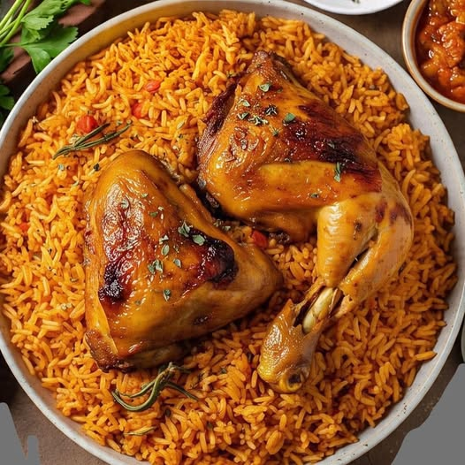

Pinkhat special
Recipes By Pinkhat
Jollof Rice

Description
Jollof rice is one of Nigeria's most iconic dishes, a smoky, tomato-based rice cooked with peppers, onions, and a blend of spices. It's a staple at parties and celebrations, often compared proudly (and competitively) to versions from Ghana and other West African countries
Ingredients
- 3 cups long-grain parboiled rice
- 4 large tomatoes
- 2 red bell peppers
- 2 scotch bonnet peppers (adjust to taste)
- 1 large onion
- 1/4 cup vegetable oil
- 2 tablespoons tomato paste
- 2 cups chicken or beef stock
- 2 bay leaves
- 1 teaspoon curry powder
- 1 teaspoon thyme
- Salt to taste
Steps
- Blend the tomatoes, red bell peppers, scotch bonnet, and half the onion into a smooth puree.
- Heat oil in a large pot and fry the remaining chopped onion until soft.
- Add tomato paste and fry for a few minutes to remove the raw taste.
- Pour in the blended pepper mixture and cook down until thickened and the oil separates, about 15-20 minutes.
- Add curry powder, thyme, bay leaves, and salt, then stir in the stock.
- Add the washed parboiled rice, stir to combine, cover, and reduce heat to low.
- Cook for 30-40 minutes, stirring occasionally, until the rice is tender and has absorbed the liquid.
- Let it sit covered for 10 minutes off the heat before serving.